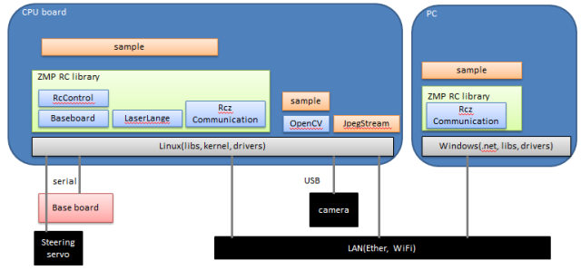
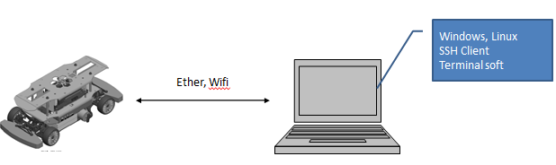
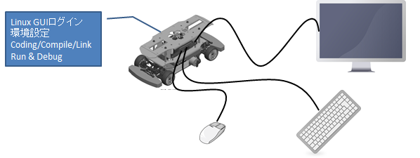

RoboCar 1/10 2016が提供する機能として、各種センサ値の取得、駆動モータ、ステアリングの制御があります。
それらすべての機能は、CPUボード上のLinuxアプリケーションによってコントロール されます。ユーザはこのアプリケーションを作成することで、RoboCarを 操ることになります。
RoboCarSDKは、このLinuxアプリケーションを作成するための クラスライブラリを提供します。これはすべての機能へのインターフェイスになります。
また、このライブラリを使うためのサンプルコードと、 ライブラリのドキュメント(APIリファレンス)を提供しています。

図: ソフトウェア概要
サンプルプログラムの利用および、ソフトウェア開発に必要な環境は以下のとおりです。
RoboCarのソフトウェア操作、開発は、RoboCar内のLinuxにログインして 操作する必要があります。SSH(Secure Shell)のクライアント が起動する、ネットワークにつながった端末(WindowsでもLinuxでも可)を 用意してください。
Windowsでしたら、以下のようなソフトウェアがFreewareとして公開されています。
 図: 開発環境その1
また、初期のネットワークの設定をするために、CPUボードにモニタ、キーボード、マウスを接続して LinuxのGUI環境(Ubuntu14.04 LTS)にログインします。 RoboCarのLinuxアプリケーションは、RoboCarに搭載のLinux上で開発することができます。
 図: 開発環境その2
ネットワークを設定するために、CPUボードに直接ログインします。 モニタ、キーボード、マウスをCPUボードに接続してください。
図: モニタ、キーボード、マウスの接続
アカウントを選択してパスワードを入力します。出荷時にはzmpアカウントを使用して下さい。
アカウント: zmp
パスワード: zmp
図: SSHでのログイン
ネットワーク経由でログインしている場合は、以下のコマンドを入力して、シャットダウン動作が終了したら、電源をOFFします。
sudo shutdown -h now
出荷時のアカウントとパスワードは以下になっています。
一般ユーザ
アカウント: zmp
パスワード: zmp
管理者
アカウント: root
パスワード: root254
出荷時の設定では、「有線ネットワーク(eht0)を使用」「DHCP」となっています。 お使いの環境に合わせて設定しなおしてください。 ネットワーク経由でCLIでの変更も可能ですが、設定を誤った時に繋がらなくなる可能性があるので GUI環境での設定変更をお勧めします。
RoboCarは、OSとしてLinuxを採用し、標準のネットワークプロトコルである TCP/IPを使用してネットワークに参加します。
常時起動しているシステムではなく、 ホストPCとの連携や、車車間通信などのネットワークを介したユーザのアプリケーション の構築しやすさを優先させているため、LinuxのセキュリティシステムをほぼOFFにしています。
既存のネットワークやLANに接続する場合は十分にセキュリティ面で気をつけ設定を 変更してから接続してください。RoboCar専用の閉じたネットワークを使用することを 強く推奨いたします。
RoboCarはFTPサーバとなっています。 外部からftpによってファイルの送受信が可能です。アカウント名ftpとしてログインしてください。
アカウント: zmp
パスワード: zmp
コマンドプロンプトを起動します。
C:\>
ftpコマンドで、RoboCarのIPアドレスを指定して接続します。Userに'zmp'としてください。 passは、任意の文字列でよいです、使われません。
C:\> ftp 192.168.0.100
Connected to 192.168.0.100
220 FTP Server ready.
User (192.168.0.100:(none)): zmp
331 Please specify the password.
Password: zmp
230 Login successful.
ftp>
ファイルを取得する場合はgetコマンドを実行して下さい。
ftp> get file.txt
ファイルを送信する場合はputコマンドを実行してください。
ftp> put file.txt
バイナリファイルの場合は、忘れずにbinコマンドでバイナリモードにしてください。
ftp> bin
ftp> put files.zip
終了は、byです。
ftp> by
上記方法でログインすると、以下のディレクトリが見えます。ファイルのやり取りをする場合、 ftpコマンドでファイルを転送したあと、このディレクトリから、cpコマンドでコピーして 希望の場所にファイルを移動してください。
/home/zmp
いくつかのサンプルアプリケーションがインストールされています。 そのまま実行することも出来ますし、また、ソースを参照することもできます。
別章で詳しく説明しています。
Linux内のファイルシステムで、RoboCarのシステムは以下のような場所に インストールされています。
/usr/local/lib/zmp/rc110_v2 /usr/local/lib/
/usr/local/include/zmp/rc110v2 /usr/local/include/opencv /usr/local/include/opencv2 /usr/local/include/urgc /usr/local/include/urg_cpp
/home/zmp/proj/RoboCar110_2016/samples
/root/zmp/demos
/root/zmp/config
共有ライブラリ検索パスに上記のディレクトリを追加しています。 /home/zmp/.bashrc
LDLIBRARYPATH=/usr/local/lib:/usr/local/lib/zmp/rc110v2:$LDLIBRARYPATH
export LDLIBRARY_PATH